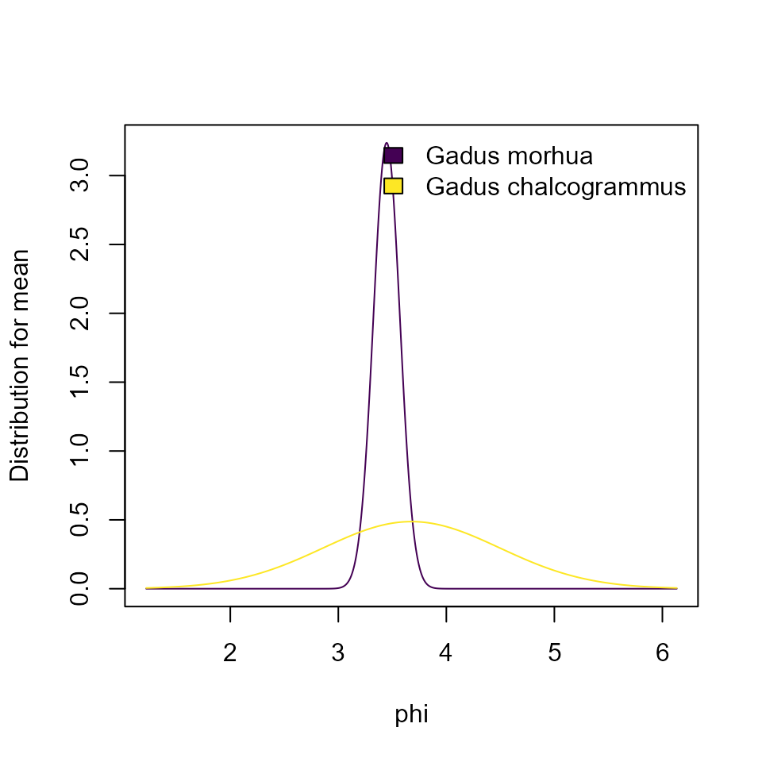
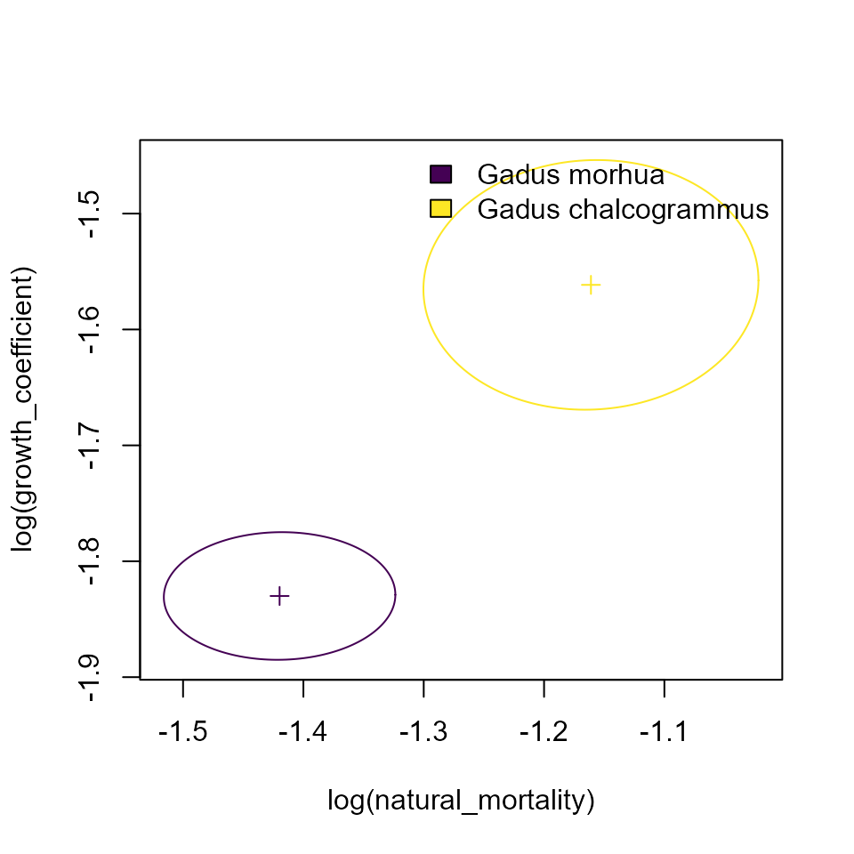
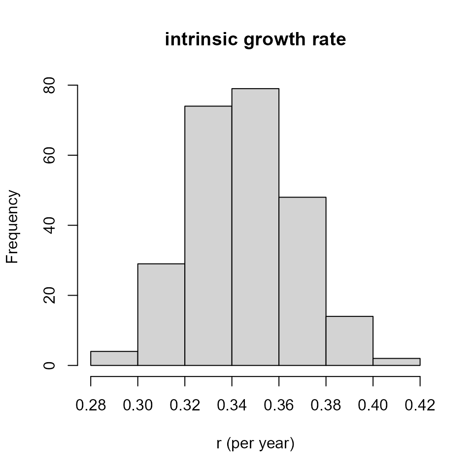
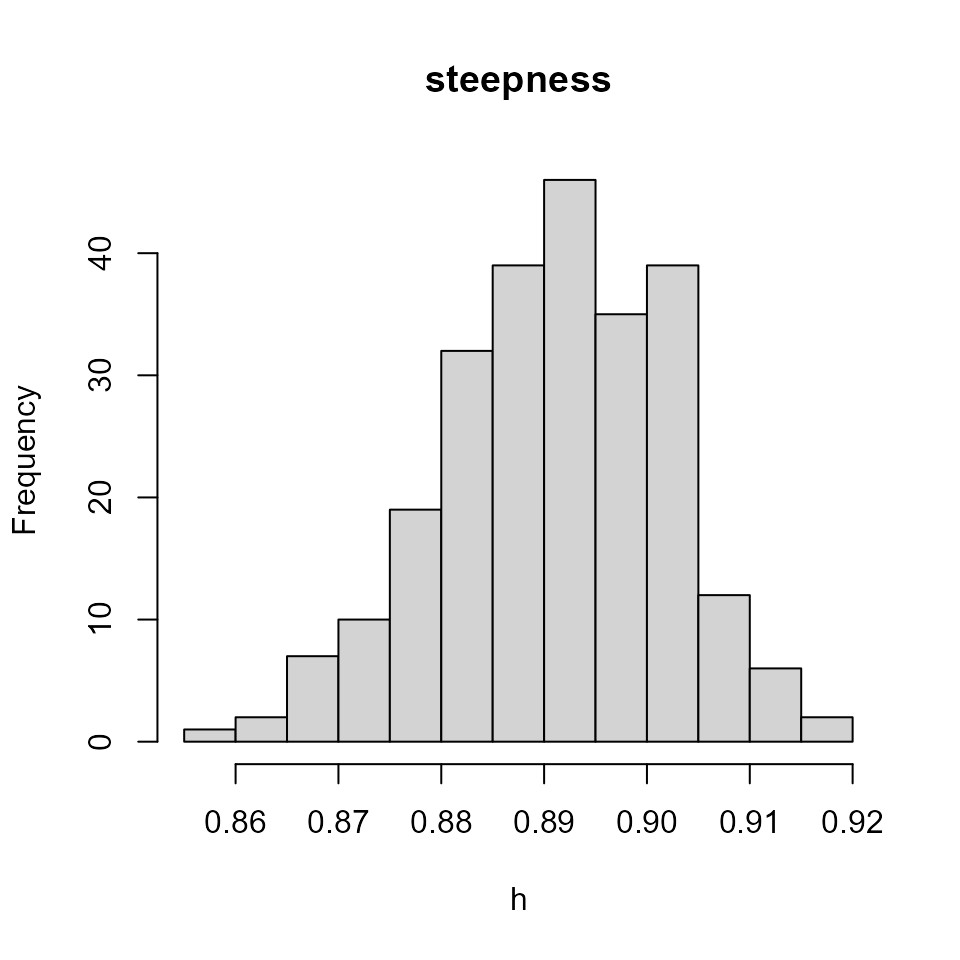
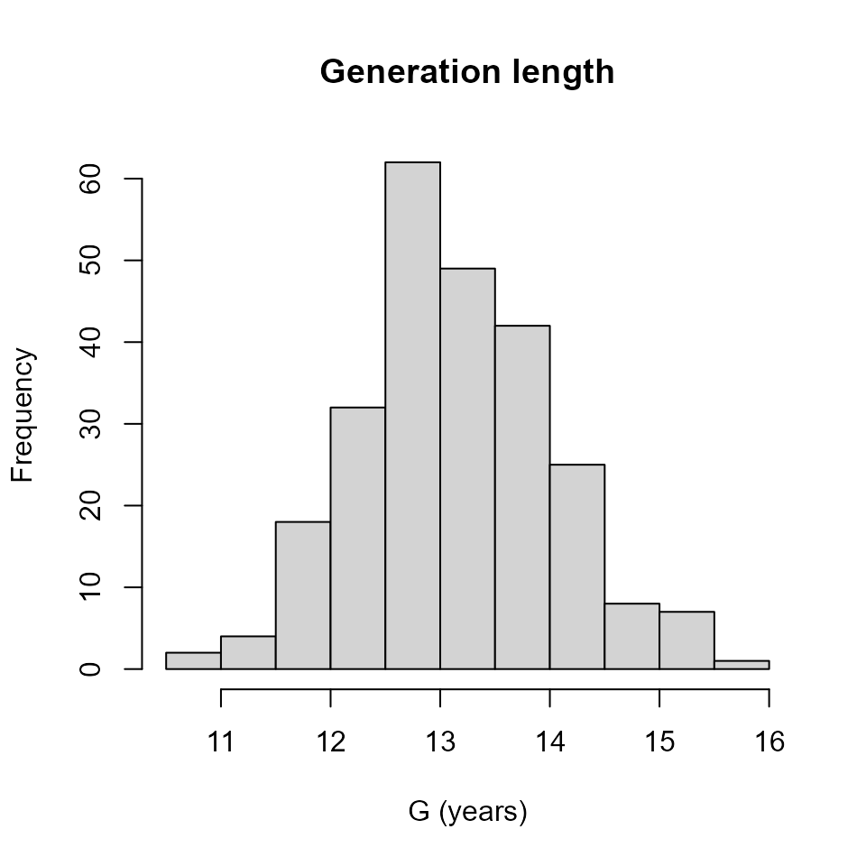

Introducing fishtraitR
fishtraitR is an R package to access imputed values (and predictive uncertainty) for life-history parameters. It is used for Stage-3 of the “fish-trait-network,” which (Thorson and Lindmark, n.d.) defines as having three stages:
Compilation, i.e., accessing and harmonizing life-history measurements or records that can be used to estimate them (e.g., stock-recruitment records);
Imputation, e.g., applying phylogenetic trait imputation using phylogenetic structural equation models (Thorson and Bijl 2023) to share information among taxa and traits;
Distribution, e.g., tracking requests for future updates, identifying and updating an API for access to values, and discussing best practices with user communities.
Each of these stages can be done intensively and infrequently as a Benchmark analysis, or routinely as an Update analysis, and fishtraitR uses Zenodo to source values that are intended to be updated.
Demonstration
Here, we show how fishtraitR could be used. We first download the
library("fishtraitR")
# Download database from Zenodo
download_traits()
#> [1] "C:\\Users\\jtuth\\AppData\\Local/R/cache/R/ftn-distribution/zenodo_24259333"We then select the species for which to download traits, and plot output for single traits, or pairs of traits
# Download trait values and predictive distribution
traits = get_traits( c("Gadus morhua", "Gadus chalcogrammus") )
# Plot single traits
plot( traits, variables = "phi" )
# Plot pair of traits
plot( traits, variables = c("log(natural_mortality)", "log(growth_coefficient)") )
We can also use predicted traits to calculate plug-in estimates for derived quantities such as intrinsic growth rate or steepness of the stock-recruit curve:
# Extract growth rate
derived = get_r(
K = exp(traits$est['log(growth_coefficient)',"Gadus morhua"]),
Winf = exp(traits$est['log(weight_infinity)',"Gadus morhua"]),
a_mat = exp(traits$est['log(age_maturity)',"Gadus morhua"]),
CR = 1 + exp(traits$est['phi',"Gadus morhua"]),
M = exp(traits$est['log(natural_mortality)',"Gadus morhua"])
)
derived
#> intrinsic_growth_rate generation_time steepness_h
#> 0.3416850 13.1518847 0.8901644Finally, we can use samples from the multivariate-normal approximation of the predictive distribution to approximate uncertainty in derived quantities
# Sample from predictive distribution
traits_i = mvtnorm::rmvnorm(
n = 250,
mean = traits$est[,"Gadus morhua"],
sigma = traits$cov[,,"Gadus morhua"]
)
# Calculate and plot
pred_zi = mapply(
FUN = get_r,
K = exp(traits_i[,'log(growth_coefficient)']),
Winf = exp(traits_i[,'log(growth_coefficient)']),
a_mat = exp(traits_i[,'log(age_maturity)']),
CR = 1 + exp(traits_i[,'phi']),
M = exp(traits_i[,'log(natural_mortality)'])
)
# Intrinsic growth rate
hist(pred_zi['intrinsic_growth_rate',], main = "intrinsic growth rate", xlab = "r (per year)")
# Steepness
hist(pred_zi['steepness_h',], main = "steepness", xlab = "h")
# Generation time
hist(pred_zi['generation_time',], main = "Generation length", xlab = "G (years)")